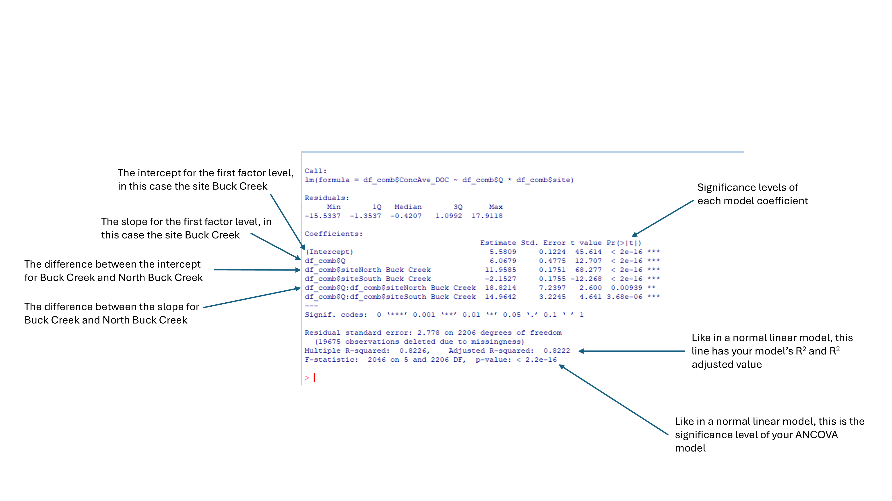

Module 21 River discharge, DOC and nitrate
Learning Goal
Merging datasets of different lengths and with different columns names
Linear regression in base R
A brief introduction into Analysis of Covariance (ANCOVA) in base R
A brief introduction into model simplification
In this exercise we are going to use freely available data of river discharge, dissolved organic carbon and nitrate concentrations from the Buck Creek catchment, Adirondack Park, New York state, USA. Measurements were taken at three sites within the catchment between 2001 to 2021.
The full citation for the data is as follows:
Ryan, K.A., and Lawrence, G.B., 2023, Streamflow, dissolved organic carbon, and nitrate input datasets and model results using the Weighted Regressions on Time, Discharge, and Season (WRTDS) model for Buck Creek Watersheds, Adirondack Park, New York, 2001 to 2021: U.S. Geological Survey data release, https://doi.org/10.5066/P95PGJ0C
Part 1: Merging the datasets
The discharge (Q), dissolved organic carbon (DOC) and nitrate (NO3) data for Buck Creek are split across three datasets. We want to merge these datasets into one dataframe.
1. Download the three datasets and save to your working directory:
2. Read in your three dataframes and name them as follows: “Q.csv”-> df1; “Sample_DOC.csv”-> df2; “Sample_Nitrate.csv”-> df3
Refer back to Module 13 Importing data if you can’t remember how to do this.
3. Using summary() and head(), take a look at what each dataframe contains.
Does each dataframe contain the same columns? Does each dataframe have the same numbers of rows? If there are shared column names, do the contain the same data type within them?
Each dataframe has a different number of rows, and therefore observations. And each dataframe has a different number of columns.
However, some columns appear to be the same and contain the same type of data. This is particularly true for the columns which appear to contain dates and time information. This will be useful later.
4. Check that for each dataset, the same sites were sampled, using unique()
You should see that all three datasets contain data from “Buck Creek”, “North Buck Creek”, “South Buck Creek”.
5. Using intersect and colnames compare each dataframe with one another to see which column names each dataframe shares with the other dataframes. To help you, this is an example of what the code should look like:
intersect(colnames(df1), colnames(df2))
intersect(colnames(df1), colnames(df3))
intersect(colnames(df2), colnames(df3))From this we can see that all dataframes share the following columns: “site”, “Date”, “Julian”, “Month”, “Day”, “DecYear”, “MonthSeq”
The column names are not particularly informative, but the authors provide meta data on their website. The table below gives a brief description of what each column represents.
| Column | Description |
|---|---|
| Site | Field site |
| Date | Date |
| Julian | Julian date |
| Month | Month, numerical |
| Day | Day of the year |
| DecYear | Decimal year, a number which represents the time, day and year all in one number |
| MonthSeq | Month sequence, representing the number of months since January 1, 1850 |
We can also see that the DOC dataframe (df2) and the nitrate dataframe (df3) share the following column names: “ConcLow”, “ConcHigh”,“Uncen”,“ConcAve”, “waterYear”,“SinDY”,“CosDY”. Their descrption is given in the following table.
| Column | Description |
|---|---|
| ConcLow | Lower limit of concentration of DOC or nitrate (mg/L) |
| ConcHigh | Lower limit of concentration of DOC or nitrate (mg/L) |
| ConcAve | Lower limit of concentration of DOC or nitrate (mg/L) |
| waterYear | Let’s ignore this! |
| SinDY | Let’s ignore this! |
| CosDY | Let’s ignore this! |
6. Within the package "dplyr" there is a command full_join(). Using the package help page look up what full_join() does. Then load the dplyr library and using full_join() join together the three dataframes into a new dataframe called df_comb, merging the seven commonly shared columns between the three dataframes.
If you are lost, take a look at this example code for help:
df_comb <- df1 %>%
full_join(df2, by = c("site", "Date","Julian","Month","Day","DecYear","MonthSeq")) %>%
full_join(df3, by = c("site", "Date","Julian","Month","Day","DecYear","MonthSeq"))
7. Inspect the new, merged dataframe to make sure you understand what R has done. Use can for example use head() and tail().
Can you work out what has happened? Any rows in the three dataframes which contained identical information in all of the seven columns have been merged. So if discharge, DOC and nitrate measurements were taken at a site at the same time, they will be merged into one row.
What if only discharge was measured at a particular site, on a particular date? As there is no DOC or nitrate data avaliable for this site and date and time, DOC and nitrate columns will contain NA.
8. Take a look at the column names of the new, merged, dataframe.
Because df2 (DOC) and df3 (nitrate), contained columns which had identical names, which we did not merge, R has added on “.x” and “.y” to the column names to distinguish them. As df2 was combined first with df1, it is represented by “.x”.
Rename these columns to avoid any confusion using the gsub command, which can be used like “find and replace”. We want to find and replace any “.x” in our column names with “_DOC” and we want to find and replace any “.y” in our column names with “_Nitrate”.
Give it a go. Here is an example of the code to help you:
colnames(df_comb) <- gsub(".x", "_DOC", colnames(df_comb))
colnames(df_comb) <- gsub(".y", "_Nitrate", colnames(df_comb))Check that this has worked.
Hooray! You should now have a merged dataframe with renamed columns.
Part 2: Linear regression in base R
We’re going to use our merged dataframe to practice linear regression in base R. We’ll be looking to see if there is a relationship between discharge and average DOC concentration.
But before we use our merged dataframe which contains real world data, we are going to practice linear regression on a fake dataset which was generated by AI. We’ll start with the fake dataset, because AI deliberately produced a dataset where we would see clear results. Real life data is often much more messy than this.
1. Download the fake dataset:
Read in the dataframe and call it “Fake”. Take a look at it.
2. Plot “Var1” against “Var2”. We want “Var1” as the “predictor” variable (also known as the “indepent” variable), so it needs to form the x axis. “Var2” is our “response” variable (also known as “dependent” variable), so it goes on the y axis.
Does it look like there is a relationship between Var1 and Var2? We can clearly see that as Var1 increases, Var2 increases, so it looks like there is a relationship. But we will use linear regression to best describe that relationship and see whether that relationship is significant and how strong it is.
If you are completely new to linear regression, take some time to read about what it is. If you are ever unsure about a statistical concept, or terminology, type it into Google. You will find a wide range of resources online to help you.AI language models like ChatGPT or CoPilot can also be very helpful, but remember that these are just models, and models can be wrong sometimes!
3. We will now fit a linear model to our data, and we’ll call this model “LM1”. To do this we use the command lm() in base . Within the bracket we structure it as follows response variable~predictor variable. So our code looks like:
4. Now to get the results of our linear model LM1, we use
The below figure shows you where you can get the R2 value and the p-value of your model. It also shows you where you can get the intercept value and the slope value of the model. There is also a p-value given for your intercept and slope. This isn’t that meaningful for a simple linear regression, as all it is telling you is whether you intercept and slope are significantly different to zero. However, this column in the coefficients table becomes useful when your models get more complex.

So we can see that our model explains a lot of the variance and the relationship is significant.
5. Now we want to make sure that our linear model is actually appropriate, and is the right type of model to describe our data. We want to check the diagnostic plots (e.g. the quantile-quantile, the residuals vs fitted, the spread-location, and the residuals vs leverage plots). To get these plots use:
You will see that R will cycle through each plot with a click of the mouse. If you want to see all four plots at once add in par(mfrow=c(2,2)) before you call plot().
We can see from the diagnostic plots that our model is a very good fit…That is not a coincidence! CoPilot was specifically asked to to generate dataset with a significant linear relationship, with a high R2.But with real data it is unlikley that we would get such a good fit.
6. Now that we have our model and it is a good fit, re-plot the data and we will add a line which represents our linear model. Once you have made your plot, add the line using the this simple comand:
And voila, your linear model is plotted.
7. Let’s now see what happens when we try to fit a linear model to the real world river data. Plot the mean DOC concentration (df_comb$ConcAve_DOC) against river discharge (df_comb$Q, measured in m3 s-1). So we are treating discharge as the predictor variable, and mean DOC concentration as the response variable.
Take a look at the data. Do you think there looks to be an obvious relationship between DOC and discharge?
8. This time plot the mean DOC concentration against river discharge, but colour the data points by site. You know how to do this using ggplot, but if you want to do this in base R, you need to create a variable storing the colours you want, and then tell R to apply these colours to the data depending on the site:
`cols<-c("blue","darkblue","lightblue")
plot(df_comb$Q, df_comb$ConcAve_DOC, col=cols[as.factor(df_comb$site)])It looks like the relationship between DOC and discharge is different depending on the site.
9. Because the relationship seems to be site dependent, let’s fit a linear model to the data for each site. You can subset the dataset, and then call lm(). Or you can subset the data whilst calling lm(). Here’s an example for the site Buck Creek:
10. Get the model summary for each of the models.Is the relationship between DOC and discharge significant for each site? Do your models explain a lot of the variance in the data?
11. Now take a look at the diagnostic plots for each of the models. What do you think?
We can see from the quantile-quantile plots that our residuals are not normally distributed. What does this mean? It means that our p-values for the models are not reliable.
If we look at the residuals vs fitted plot, here we can see a wave pattern. This is a very strong indication that our relationship is not linear. We would then be required to look into fitting non-linear models to our data. But we won’t do that today.
Part 3: Analysis of covariance (ANCOVA) in base R
In part two we subsetted our data and fitted a linear model to each of our three sites when looking at the relationship between DOC and discharge. This was because the intercept and the slope of the linear models looked to be different for the three sites. However, we didn’t actually need to do this- we could have put the three sites together into a model which allowed for different each site to have a different intercept and slope. This type of analysis is called analysis of covariance (ANCOVA). Let’s take a look at what this looks like in base R.
1. We are going to build our ANCOVA model (which we will name ANCOVA). We do this using the lm() as before, but this time we are going to add an extra term to the model:
Can you spot the additional term? It is the *df_comb$site. When using lm() the /* represents what is a called an interaction In other words we are saying, fit a model which represents the relationship between DOC and discharge, but this relationship can vary by site. Run this model.
2. Now get the summary() of this model.
It is pretty much the same as the output of a normal linear model- you get an R2 value and a p-value. But in the coefficicents table, instead of one row for the intercept and one row for the slope, we have lots of rows. Initially it can be hard to interpret this part of the output, but it is actually quite straightforward once you know what you are looking at. Take a look at the below figure:

When you have a factor in your model, R treats the model for first level of the factor (based on alphabetical order) as the default. Therefore, looking at the coefficients table, the first row represents the model intercept for the site Buck Creek. The second row represents the slope for the Buck Creek model. This is just like a normal linear model.
However, the third row does not represent the intercept for North Buck Creek, but the difference between the default model intercept and the North Buck Creek intercept. Therefore, the North Buck Creek intercept = 5.5809 + 11.9585 = 17.5394.
The fourth row is not the slope for North Buck Creek, but the intercept for South Buck Creek, as after the default model intercept and slope, all other factor level intercepts are grouped, and under this are the slope values for all other factor levels. What, therefore, is the intercept value for South Buck Creek?
The fifth and sixth row represents the slope for North Buck Creek and South Buck Creek. We can tell, because the coefficient names contain a : . Like for the intercepts, the values in these rows represent the difference between the Buck Creek slope value and the slope value for the other two factor levels. What therefore is the slope value for North Buck Creek and South Buck Creek?
Let’s look at the p-values for the coefficients. When we had just a simple linear model, we weren’t really interested in these. But when running ANCOVA, we are interested in these. Can you think what they represent? These p-values are telling you whether the intercept and the slope for each site are significantly different to the default model, i.e. whether the intercept and slope values of North Buck Creek and South Buck Creek are significantly different to the intercept and slope of Buck Creek.
3. Let’s try to visualise these different intercepts and slopes. Re-plot your DOC and discharge data, with the three sites represented by different colours.
Now we are going to add ablines representing the different linear models for each site. This is a bit tricky with ANCOVA, because we cannot do abline(ANCOVA) because we have more than one slope and more than one intercept. Therefore we need to fit an abline() for each site, and tell abline() the specific value of the intercept and slope.
You could do this by typing the following, for Buck Creek:
And this for North Buck Creek:
What would be the abline() values be for South Buck Creek?
An alternative way to do it is to turn your summary() output into an object and then use indexing to get the correct values from the coefficients table:
SUMMARY<-summary(ANCOVA)
SUMMARY$coefficients
abline(SUMMARY$coefficients[1,1],SUMMARY$coefficients[2,1], col="blue")
abline((SUMMARY$coefficients[1,1]+SUMMARY$coefficients[3,1]),(SUMMARY$coefficients[2,1]+SUMMARY$coefficients[5,1]), col="darkblue")Using this method, can you produce the abline code for South Buck Creek?
4. Like a normal linear model, we also need to check the model diagnostic plots to see how well our model fits the data. The command is exactly the same as for our linear model:
Run this code. As you will see, we get only one set of diagnostic plots for all sites. And as we already knew, a linear model does not describe this data well.
Part 4. Model simplification
Let’s go back to our fake dataset, which we called fake. Take a look at the column names.As you will see, as well as our two variables Var1 and Var2, we also have a factor, called…Factor, with two levels A and B.
1. Plot Var2 against Var1, but this time give the data a different colour for the different Factor levels.
2. Run an ANCOVA investigating the relationship between Var2 and Var1, and determine whether this relationship is the same for Factor A and Factor B.
3. Get the summary() output of this ANCOVA.
Is Factor B’s intercept significantly different from Factor A’s intercept?
Is Factor B’s slope significantly different from Factor A’s slope?
4. As you will have hopefully have noticed, the slope was not significantly different between Factor A and Factor B. That means it was unnecessary to fit a model which fits a different slope for each factor.
When fitting models you want to fit the simplest model that does the best job of explaining your data. If you a simple model does performs as well as more complex model, go with the simpler model.
So what do we do in this instance? We know that slope does not differ between the two factor levels, but intercept does. Therefore we need to fit a model which fits different intercepts, but not slopes, for each factor level. How do we do this in R? We just replace the * with a + in our lm() model:
5. Take a look at your summary() output of your simplified model. Are all model coefficients now significant?
6. Take a look at your model diagnostic plots. Are there any problems with our model?
7. We want to make sure we were justified in simplifying our model. Is our simplified model significantly different to our more complex model?
We can make this comparison using anova:
We can see in the output that p>0.05, which means there is no significant difference between our models. Our simplified model performs equally as well as our more complex model. Therefore we were justified in simplifying our model.
8. Finally fit ablines() for each factor from the simplified model to your plot of Var2 plotted against Var1.